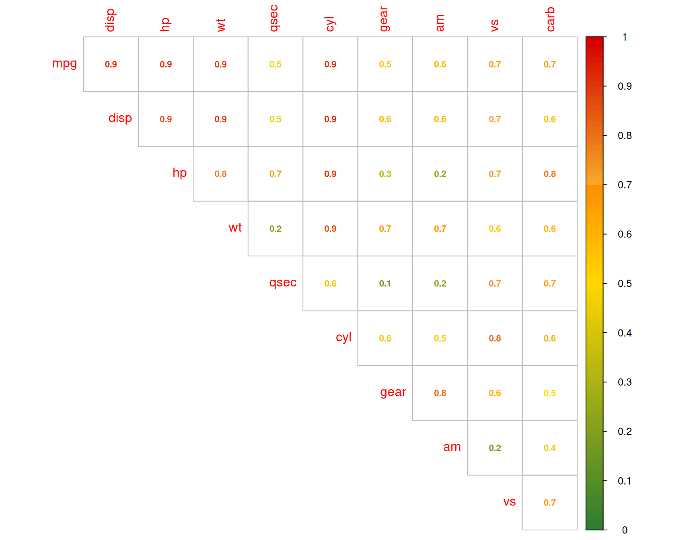
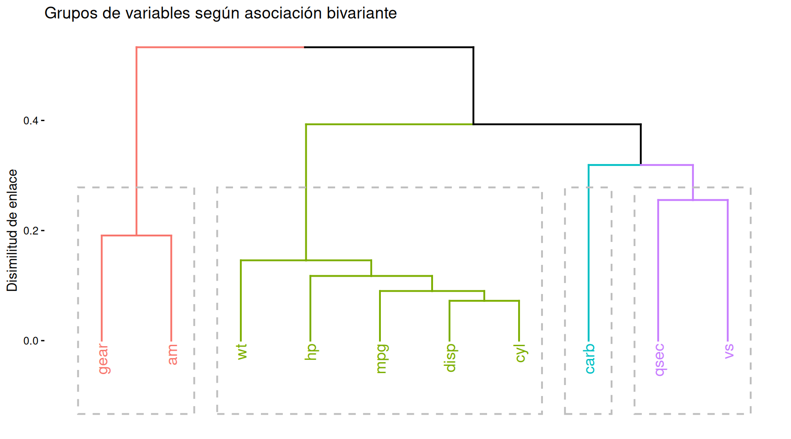
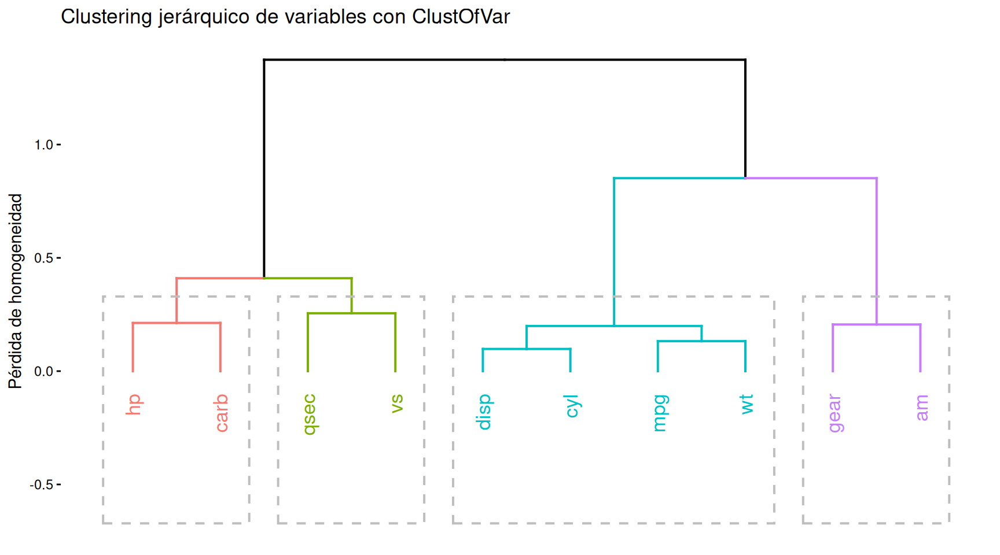
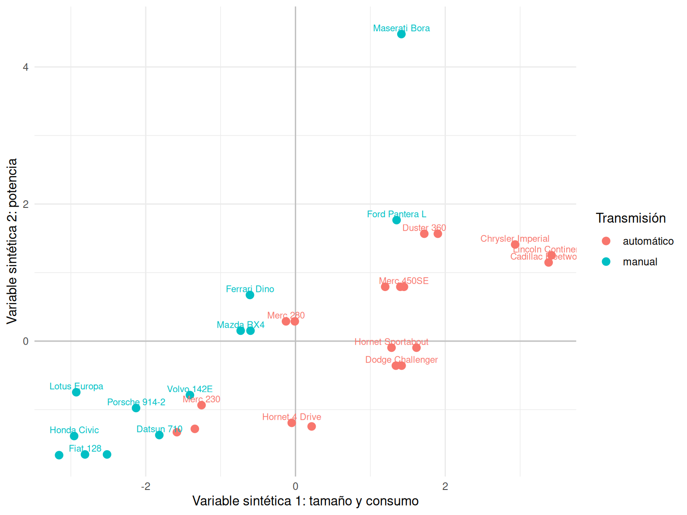

Código
library(tidyverse)
library(knitr)
theme_set(theme_minimal())library(tidyverse)
library(knitr)
theme_set(theme_minimal())En los capítulos anteriores cada objeto era un automóvil y buscábamos grupos de automóviles parecidos. Ahora cambia la unidad que se agrupa: los objetos son las variables. Dos variables deberían quedar próximas cuando transmiten información similar sobre los mismos individuos.
Este cambio permite responder preguntas distintas:
El clustering de variables no demuestra relaciones causales ni convierte automáticamente un conjunto de columnas en conceptos sustantivos. Produce una organización exploratoria que depende de cómo definamos la asociación, del tratamiento de las variables ordinales y de la regla de enlace.
Usaremos una versión mixta de mtcars durante todo el capítulo. cyl y gear se tratarán como ordinales; am, vs y carb, como nominales.
datosCluster <- mtcars |>
as_tibble(rownames = "modelo") |>
transmute(
modelo,
mpg,
disp,
hp,
wt,
qsec,
cyl = ordered(cyl),
gear = ordered(gear),
am = factor(am, labels = c("automático", "manual")),
vs = factor(vs, labels = c("V", "recto")),
carb = factor(carb)
)
tibble(
variable = names(datosCluster)[-1],
tratamiento = c(
rep("cuantitativa", 5),
rep("ordinal", 2),
rep("nominal", 3)
)
) |>
kable(
col.names = c("Variable", "Tratamiento en este capítulo"),
caption = "Tipos usados para seleccionar la medida de asociación."
)| Variable | Tratamiento en este capítulo |
|---|---|
| mpg | cuantitativa |
| disp | cuantitativa |
| hp | cuantitativa |
| wt | cuantitativa |
| qsec | cuantitativa |
| cyl | ordinal |
| gear | ordinal |
| am | nominal |
| vs | nominal |
| carb | nominal |
La clasificación no es una propiedad puramente informática. Por ejemplo, cyl podría tratarse como cuantitativa si interesara el cambio por cilindro, como ordinal si solo importara el orden o como nominal si cuatro, seis y ocho cilindros fueran configuraciones sin distancias comparables.
Para agrupar variables necesitamos cuantificar cuánto se parecen. No existe una única medida adecuada para todas las combinaciones de tipos.
Para dos variables cuantitativas \(X\) e \(Y\), la correlación muestral de Pearson es
\[ r_{XY} = \frac{\sum_{i=1}^n (x_i-\bar{x})(y_i-\bar{y})} {\sqrt{\sum_{i=1}^n (x_i-\bar{x})^2} \sqrt{\sum_{i=1}^n (y_i-\bar{y})^2}}. \]
Es la covarianza expresada en unidades de desviación típica. Toma valores entre \(-1\) y \(1\): el signo indica la dirección y \(|r|\) mide la intensidad de la relación lineal. Una transformación lineal de escala no cambia \(|r|\), pero los valores atípicos pueden alterarlo mucho.
Una correlación nula no implica independencia. Puede existir una relación curva fuerte cuya pendiente positiva en una zona se compense con una pendiente negativa en otra. Pearson responde a una pregunta precisa: ¿hasta qué punto la nube se aproxima a una recta?
Spearman sustituye los valores por sus rangos y calcula Pearson sobre ellos:
\[ \rho_s = \operatorname{cor}\{R(X),R(Y)\}. \]
Si no hay empates, también puede escribirse como
\[ \rho_s = 1-\frac{6\sum_{i=1}^n d_i^2}{n(n^2-1)}, \]
donde \(d_i\) es la diferencia entre los rangos de \(x_i\) e \(y_i\). Con empates, R asigna rangos medios y usa directamente la primera definición.
Spearman mide asociación monótona: valores altos de una variable tienden a acompañar valores altos, o bajos, de la otra, aunque la relación no sea lineal. Por eso es natural para ordinales. No presupone que el salto entre 4 y 6 cilindros represente la misma distancia sustantiva que el salto entre 6 y 8; solo usa el orden. A cambio, descarta información sobre la magnitud de los intervalos.
pares_correlacion <- tribble(
~x, ~y,
"mpg", "wt",
"disp", "hp",
"qsec", "gear"
) |>
mutate(
pearson = map2_dbl(
x, y,
~ cor(as.numeric(datosCluster[[.x]]),
as.numeric(datosCluster[[.y]]),
method = "pearson")
),
spearman = map2_dbl(
x, y,
~ cor(as.numeric(datosCluster[[.x]]),
as.numeric(datosCluster[[.y]]),
method = "spearman")
)
)
pares_correlacion |>
mutate(across(c(pearson, spearman), ~ round(.x, 3))) |>
kable(
col.names = c("Variable X", "Variable Y", "Pearson", "Spearman"),
caption = "Pearson y Spearman responden a nociones distintas de asociación."
)| Variable X | Variable Y | Pearson | Spearman |
|---|---|---|---|
| mpg | wt | -0.868 | -0.886 |
| disp | hp | 0.791 | 0.851 |
| qsec | gear | -0.213 | -0.148 |
Para agrupar variables suele interesar la redundancia y no su dirección. mpg y wt aportan información parecida aunque su relación sea negativa. Por eso usaremos \(|\rho_s|\): \(-1\) y \(1\) representan asociación máxima. Esta decisión elimina el signo, que habrá que recuperar al interpretar cada grupo.
Para dos factores, los rangos no tienen significado cuando al menos uno de ellos es nominal. Partimos de su tabla de contingencia, con frecuencias observadas \(O_{ab}\). Bajo independencia, la frecuencia esperada en la celda \((a,b)\) es
\[ E_{ab} = \frac{n_{a\cdot}n_{\cdot b}}{n}, \]
y el estadístico chi-cuadrado es
\[ \chi^2 = \sum_{a=1}^A\sum_{b=1}^B \frac{(O_{ab}-E_{ab})^2}{E_{ab}}. \]
El valor de \(\chi^2\) aumenta con el tamaño muestral y con el número de categorías. La V de Cramér lo normaliza:
\[ V = \sqrt{\frac{\chi^2}{n\min(A-1,B-1)}}. \]
Así, \(0\leq V\leq 1\). El valor \(0\) indica ausencia de asociación observada y \(1\), asociación perfecta en el sentido permitido por la tabla. Es simétrica y no tiene signo: cambiar el orden o el nombre de las categorías no cambia \(V\).
Un valor alto no indica qué categorías aparecen juntas; para eso hay que inspeccionar porcentajes condicionados o residuos estandarizados. Además, con muestras pequeñas, muchas categorías o celdas escasas, la estimación puede ser inestable y presentar sesgo positivo. En nuestra matriz, una pareja ordinal–nominal se estudiará así: la ordinal conserva sus categorías, sin convertirlas en una respuesta numérica artificial.
Cuando una variable \(Y\) es cuantitativa y otra \(G\) define grupos nominales, podemos medir qué parte de la variabilidad de \(Y\) se explica mediante diferencias entre medias de grupo. La descomposición de ANOVA es
\[ \underbrace{\sum_{i=1}^n(y_i-\bar y)^2}_{SS_T} = \underbrace{\sum_{g=1}^G n_g(\bar y_g-\bar y)^2}_{SS_B} + \underbrace{\sum_{g=1}^G\sum_{i\in g}(y_i-\bar y_g)^2}_{SS_W}. \]
Definimos
\[ \eta^2(Y\mid G)=\frac{SS_B}{SS_T}, \qquad \eta(Y\mid G)=\sqrt{\eta^2(Y\mid G)}. \]
Eta está entre \(0\) y \(1\). Si las medias de todos los grupos son iguales, \(\eta=0\); si dentro de cada grupo todos los valores coinciden y las medias difieren, \(\eta=1\). A diferencia de Pearson, puede capturar cualquier patrón de diferencias entre medias, no solo una tendencia lineal. Conceptualmente es direccional: se explica una respuesta estrictamente numérica mediante grupos. La función que construiremos coloca siempre la variable numérica como respuesta, con independencia del orden de los argumentos.
La función eta_squared() devuelve \(\eta^2\) y tomamos su raíz cuadrada para incorporar \(\eta\) a la matriz. Los supuestos habituales del ANOVA son relevantes para pruebas e intervalos de confianza, pero la identidad \(SS_T=SS_B+SS_W\) y el cociente descriptivo no necesitan normalidad.
tibble(
pareja = c("am - vs", "hp - carb", "qsec - vs"),
medida = c("V de Cramér", "eta", "eta"),
asociacion = c(
DescTools::CramerV(datosCluster$am, datosCluster$vs),
sqrt(
effectsize::eta_squared(
aov(hp ~ carb, data = datosCluster),
partial = FALSE,
ci = NULL
)$Eta2[1]
),
sqrt(
effectsize::eta_squared(
aov(qsec ~ vs, data = datosCluster),
partial = FALSE,
ci = NULL
)$Eta2[1]
)
)
) |>
mutate(asociacion = round(asociacion, 3)) |>
kable(
col.names = c("Pareja", "Medida", "Asociación"),
caption = "Ejemplos de asociaciones nominales y mixtas en mtcars."
)| Pareja | Medida | Asociación |
|---|---|---|
| am - vs | V de Cramér | 0.168 |
| hp - carb | eta | 0.787 |
| qsec - vs | eta | 0.745 |
| Variable X | Variable Y | Medida propuesta | Qué considera parecido |
|---|---|---|---|
| Ambas numéricas u ordinales | Ambas numéricas u ordinales | \(|\rho_s|\) | Ordenación monótona similar, en cualquier dirección |
| Dos factores, si alguno es nominal | Dos factores, si alguno es nominal | V de Cramér | Distribuciones condicionadas alejadas de la independencia |
| Numérica | Factor nominal | \(\eta\) | Medias numéricas diferentes entre categorías |
No mezclamos directamente los valores originales: construimos medidas entre \(0\) y \(1\) con una interpretación común aproximada, desde asociación débil hasta asociación fuerte. Que compartan rango no significa que sean estimadores idénticos ni que un \(0.6\) tenga exactamente el mismo significado estadístico en los tres casos.
La siguiente función automatiza la selección de la medida a partir de los tipos de ambas variables y devuelve una intensidad de asociación entre \(0\) y \(1\).
metricaAsociacion <- function(x, y) {
if ((is.numeric(x) || is.ordered(x)) &&
(is.numeric(y) || is.ordered(y))) {
abs(cor(as.numeric(x), as.numeric(y), method = "spearman"))
} else if (is.factor(x) && is.factor(y)) {
DescTools::CramerV(x, y)
} else if (is.numeric(x) || is.ordered(x)) {
eta2 <- effectsize::eta_squared(
aov(as.numeric(x) ~ y),
partial = FALSE
)$Eta2
sqrt(eta2)
} else {
eta2 <- effectsize::eta_squared(
aov(as.numeric(y) ~ x),
partial = FALSE
)$Eta2
sqrt(eta2)
}
}Aplicamos la función a todas las parejas. modelo es un identificador, no una variable activa, y por eso se excluye.
matrizAsoc <- DescTools::PairApply(
datosCluster |> select(-modelo),
metricaAsociacion,
symmetric = TRUE
)
colores <- c(
colorRampPalette(c("#2E7D32", "#FFD600"))(50),
colorRampPalette(c("#FFD600", "#FF9100"))(20),
colorRampPalette(c("#F9A825", "#D50000"))(30)
)
corrplot::corrplot(
matrizAsoc,
type = "upper",
diag = FALSE,
method = "number",
col.lim = c(0, 1),
number.cex = 0.7,
col = colores,
is.corr = FALSE,
number.digits = 1
)
El bloque mpg–disp–wt–cyl presenta asociaciones altas. También aparecen vínculos entre gear y am, y entre hp y carb. Pero el gráfico no muestra que mpg se relaciona negativamente con peso y cilindrada, porque tomamos el valor absoluto. Antes de nombrar un bloque hay que volver a los signos, las distribuciones y el significado de las variables.
Podemos transformar una asociación \(a_{jk}\in[0,1]\) en la disimilitud
\[ d_{jk}=1-a_{jk}. \]
Dos variables perfectamente asociadas quedan a distancia cero; dos variables sin asociación, a distancia uno. Sobre esta matriz se puede aplicar el clustering jerárquico estudiado anteriormente.
distancia_asociacion <- as.dist(1 - matrizAsoc)
arbol_asociacion <- hclust(distancia_asociacion, method = "average")
factoextra::fviz_dend(
arbol_asociacion,
k = 4,
rect = TRUE,
show_labels = TRUE,
main = "Grupos de variables según asociación bivariante",
xlab = "",
ylab = "Disimilitud de enlace"
)
Este dendrograma organiza relaciones por parejas y el resultado depende del enlace. Además, \(1-a_{jk}\) no tiene por qué cumplir la desigualdad triangular; hclust() puede tratarla como disimilitud, pero no debemos atribuirle automáticamente todas las propiedades de una distancia métrica.
La estrategia anterior construye primero todas las asociaciones bivariantes. ClustOfVar plantea una pregunta algo más global: ¿podemos formar grupos de variables de modo que cada grupo quede bien representado por una sola variable sintética? (Chavent et al. 2012)
Pensemos en un grupo formado por disp, wt, mpg y cyl. Una variable sintética asigna a cada automóvil una puntuación numérica que resume el patrón compartido del grupo. Un coche grande y pesado podría obtener una puntuación alta, mientras que uno ligero y eficiente obtendría una baja. El signo es arbitrario: multiplicar todas las puntuaciones por \(-1\) representa el mismo eje.
Para un cluster de variables \(C\), ClustOfVar elige la puntuación sintética \(z_C\) que maximiza su homogeneidad:
\[ H(C)= \sum_{x_j\in C_{\mathrm{cuanti}}} \operatorname{cor}^2(x_j,z_C) + \sum_{q_j\in C_{\mathrm{quali}}} \eta^2(z_C\mid q_j). \]
Una cuantitativa está bien representada si tiene una correlación lineal alta, positiva o negativa, con \(z_C\). Una cualitativa está bien representada si sus categorías separan claramente las puntuaciones de \(z_C\). Técnicamente, \(z_C\) es la primera componente de un análisis PCAMIX, pero por ahora basta entenderla como el resumen numérico que conserva la mayor coherencia interna del bloque.
Al fusionar dos grupos \(A\) y \(B\), la pérdida de homogeneidad es
\[ d(A,B)=H(A)+H(B)-H(A\cup B). \]
El algoritmo aglomerativo une la pareja con menor pérdida. La idea se parece a Ward: una fusión es barata cuando un único resumen sigue representando bien las variables reunidas. Sin embargo, la función objetivo no es la suma de cuadrados entre individuos y admite conjuntamente variables cuantitativas y cualitativas.
hclustvar() recibe por separado un data.frame cuantitativo y otro cualitativo. En este ejemplo conservamos el orden de cyl y gear mediante puntuaciones numéricas ordenadas. Esto supone que los niveles consecutivos ocupan posiciones comparables; si esa decisión no fuera defendible, deberían incluirse como factores cualitativos.
X_quanti <- datosCluster |>
transmute(
mpg,
disp,
hp,
wt,
qsec,
cyl = as.double(cyl),
gear = as.double(gear)
) |>
as.data.frame()
X_quali <- datosCluster |>
select(am, vs, carb) |>
as.data.frame()
arbol_variables <- ClustOfVar::hclustvar(
X.quanti = X_quanti,
X.quali = X_quali
)La conversión final a data.frame es necesaria porque la implementación de PCAmixdata que usa ClustOfVar comprueba las columnas con semántica de data.frame, no de tibble.
factoextra::fviz_dend(
arbol_variables,
k = 4,
rect = TRUE,
show_labels = TRUE,
main = "Clustering jerárquico de variables con ClustOfVar",
xlab = "",
ylab = "Pérdida de homogeneidad"
)
El corte en cuatro grupos se usa para aprender a leer la solución, no como afirmación de que haya exactamente cuatro dimensiones verdaderas. Como en cualquier dendrograma, conviene comparar cortes, estabilidad e interpretabilidad.
particion_variables <- ClustOfVar::cutreevar(
arbol_variables,
k = 4,
matsim = TRUE
)
tibble(
variable = names(particion_variables$cluster),
cluster = unname(particion_variables$cluster)
) |>
arrange(cluster, variable) |>
kable(
col.names = c("Variable", "Cluster"),
caption = "Pertenencia de las variables para k = 4."
)| Variable | Cluster |
|---|---|
| cyl | 1 |
| disp | 1 |
| mpg | 1 |
| wt | 1 |
| carb | 2 |
| hp | 2 |
| qsec | 3 |
| vs | 3 |
| am | 4 |
| gear | 4 |
La solución separa cuatro lecturas plausibles de los automóviles:
disp, wt, mpg y cyl: tamaño del motor, masa y eficiencia;hp y carb: potencia y alimentación;qsec y vs: aceleración y configuración del motor;gear y am: transmisión.Son nombres interpretativos, no salidas del algoritmo. Además, que carb aparezca junto a hp no implica que cambiar el carburador cause una potencia determinada.
cutreevar() proporciona la asociación cuadrática de cada variable con su resumen. Para una cuantitativa es \(r^2\); para una cualitativa, \(\eta^2\). Un valor próximo a uno indica que la variable sintética representa bien esa columna.
tabla_representacion <- imap_dfr(
particion_variables$var,
~ as_tibble(.x, rownames = "variable") |>
transmute(
cluster = .y,
variable,
asociacion_cuadratica = `squared loading`,
correlacion = correlation
)
)
tabla_representacion |>
mutate(
asociacion_cuadratica = round(asociacion_cuadratica, 3),
correlacion = round(correlacion, 3)
) |>
arrange(cluster, desc(asociacion_cuadratica)) |>
kable(
col.names = c(
"Cluster", "Variable", "Asociación cuadrática", "Correlación"
),
caption = "Calidad con la que cada variable queda resumida."
)| Cluster | Variable | Asociación cuadrática | Correlación |
|---|---|---|---|
| cluster1 | disp | 0.999 | 0.963 |
| cluster1 | wt | 0.989 | 0.936 |
| cluster1 | mpg | 0.977 | -0.944 |
| cluster1 | cyl | 0.876 | 0.936 |
| cluster2 | hp | 0.972 | 0.945 |
| cluster2 | carb | 0.894 | NA |
| cluster3 | qsec | 1.000 | 0.934 |
| cluster3 | vs | 0.872 | NA |
| cluster4 | gear | 0.904 | -0.947 |
| cluster4 | am | 0.897 | NA |
La columna correlacion solo se define para cuantitativas. Su signo orienta el eje: en el primer grupo, mpg tiene sentido contrario a disp, wt y cyl. El signo conjunto puede invertirse sin cambiar la solución. Para las cualitativas hay que comparar las medias de la puntuación por categoría, no buscar una correlación cuyo cálculo dependería de codificar arbitrariamente sus niveles.
La homogeneidad explicada de esta partición es
tibble(
numero_clusters = particion_variables$k,
homogeneidad_explicada = particion_variables$E / 100
) |>
kable(
digits = 3,
col.names = c("Número de clusters", "Proporción de homogeneidad explicada"),
caption = "Resumen global de la partición elegida."
)| Número de clusters | Proporción de homogeneidad explicada |
|---|---|
| 4 | 0.705 |
No debe maximizarse esta cifra sin penalización: con un cluster por variable, la representación es perfecta pero no hemos resumido nada. Elegir \(k\) equilibra compresión, homogeneidad, estabilidad e interpretación.
El objeto scores contiene una fila por automóvil y una columna por cluster de variables. Estas columnas son los \(z_C\): coordenadas numéricas con media aproximadamente cero que resumen los bloques.
puntuaciones <- particion_variables$scores |>
as_tibble() |>
mutate(modelo = datosCluster$modelo, .before = 1)
puntuaciones |>
slice_head(n = 8) |>
mutate(across(starts_with("cluster"), ~ round(.x, 3))) |>
kable(
col.names = c(
"Modelo", "Tamaño/consumo", "Potencia",
"Aceleración/motor", "Transmisión"
),
caption = "Primeras puntuaciones de las cuatro variables sintéticas."
)| Modelo | Tamaño/consumo | Potencia | Aceleración/motor | Transmisión |
|---|---|---|---|---|
| Mazda RX4 | -0.732 | 0.152 | -1.182 | -1.159 |
| Mazda RX4 Wag | -0.601 | 0.152 | -0.957 | -1.159 |
| Datsun 710 | -1.819 | -1.370 | 1.108 | -1.159 |
| Hornet 4 Drive | -0.050 | -1.192 | 1.442 | 1.254 |
| Hornet Sportabout | 1.282 | -0.096 | -0.957 | 1.254 |
| Valiant | 0.216 | -1.245 | 1.755 | 1.254 |
| Duster 360 | 1.720 | 1.567 | -1.431 | 1.254 |
| Merc 240D | -1.344 | -1.280 | 1.667 | 0.281 |
puntuaciones |>
mutate(transmision = datosCluster$am) |>
ggplot(aes(cluster1, cluster2, color = transmision)) +
geom_hline(yintercept = 0, color = "grey75") +
geom_vline(xintercept = 0, color = "grey75") +
geom_point(size = 2.7) +
geom_text(
aes(label = modelo),
nudge_y = 0.09,
size = 2.7,
show.legend = FALSE,
check_overlap = TRUE
) +
labs(
x = "Variable sintética 1: tamaño y consumo",
y = "Variable sintética 2: potencia",
color = "Transmisión"
)
Estas puntuaciones pueden utilizarse para describir individuos o como variables reducidas en un análisis posterior. No son promedios simples: su construcción pondera las variables para maximizar la homogeneidad de cada grupo. Antes de usarlas como predictores debe estimarse todo el proceso dentro de cada muestra de entrenamiento para evitar fuga de información.
La matriz personalizada y ClustOfVar son complementarios:
| Aspecto | Matriz de asociación personalizada | ClustOfVar |
|---|---|---|
| Medidas básicas | Spearman, V de Cramér y eta | Pearson al cuadrado, eta al cuadrado y asociación canónica para cualitativas |
| Criterio de agrupamiento | Linkage elegido sobre \(1-a_{jk}\) | Menor pérdida de homogeneidad del resumen sintético |
| Ordinales | Reconocidas mediante rangos | Requieren codificación cuantitativa justificada o tratamiento cualitativo |
| Resultado adicional | Asociaciones por parejas | Una puntuación sintética por grupo e individuo |
| Ventaja principal | Transparencia y flexibilidad | Coherencia conjunta y reducción por bloques |
Por tanto, diferencias entre dendrogramas no indican necesariamente un error. Pueden revelar que una relación monótona no es lineal, que una nominal con muchas categorías se comporta de otro modo bajo V de Cramér o que un conjunto se resume bien conjuntamente aunque alguna pareja tenga asociación modesta.
ClustOfVar forma grupos que pueden resumirse bien mediante una variable sintética numérica.scores describen a cada individuo sobre los bloques encontrados.cyl y gear primero como ordinales cuantificadas y después como nominales en ClustOfVar. Compare grupos, homogeneidad y variables sintéticas. ¿Qué decisión representa mejor una pregunta sobre diseño de automóviles?